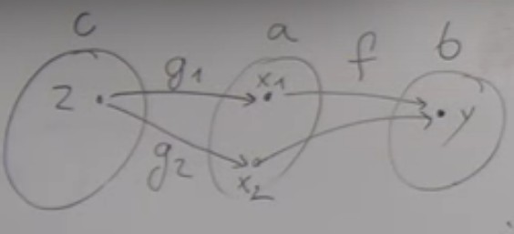

Monorphisms
A non-injective function will map two elementsx1 and x2 of set a to the same element y of set b.

If we consider functions
g1 and g2 from c to a, equal except in z : g1(z) = x1 and g2(z) = x2.
Here we have
g1 different from g2 but f o g1 = f o g2
Taking the converse permits to define a monomorphism :
f is a monomorphism if for all object c, for all morphism g1 and g2 :: c → a
f o g1 = f o g2 implies that g1 = g2.
Again, we define a property of one morphism using the whole universe.
In set theory a function that is both injective and surjective is a bijection ; so we can ask if in category theroy a morphism which is both an automorphism and an epimorphism is encessarily an isomorphism. The answer is no, there are counter-examples.
Single types
Here we define some simple types in terms of elements, and we'll see later how this can be expressed in category theory.Zero elements - Empty set
Does not correspond to a type in imperative languages.In Haskell, types are funny because they contain this bottom element. So an empty set is not really empty because it contains this bottom element. But if we forget for a moment about functions that never terminate, then we can say that the empty set corresponds to the type Void. It has no constructor.
Can we find function that takes an argument of type Void ?
If we define a function in terms of elements, mathematically speaking, the answer is yes. We could call this function a bluff. If I declare "I have a function that takes a Void and return an integer, I challenge you to call it. Prove me wrong.", you can't because there is no way to produce an element of type Void. The ability to construct a function taking a Void as argument (even if we can't call it) is important because it permits to define Void identity.
IdVoid :: Void → Void
It exists "in vacuum" : you cannot provide an argument for it, you cannot actually test what it does. But it exists.
In Haskell, it is called an absurd function.
This name makes sense if you start translating programming or type theory into logic.
In logic, Void corresponds to false. We can't construct falsity from something (we can't prove that something is false, if something is false, it's false, it has no proof). In this correspondance between types and logic (propositions as types), the existence of a function corresponds to a proof of a proposition.
Since we can't create a Void, there is no proof af falsity.
But if we assume false, then from false follows anything.
absurd :: Void → a
(a is any type).
One element - Singleton
In Haskell, this type is called unit and noted(). It has only one element, and it can be constructed from nothing.
The notation for the element of the singleton type is also noted
() ; we have the type definition () :: ().
In the point of view of logic, it correponds to
true. We can always prove that it's true (it's a tautology).
We can write a function
unit that returns a unit from any type : unit :: a → (). As unit can be created from thin air, we just disregard the argument, create and return a unit.
The function
() → Int is the creation of a constant (a pure function always returns the same value) ; there are many functions like this, for any type.
For boolean, there are two functions like this :
() → true and () → false.
We have as many functions as there are elements in the set.
We have a way to define the value of an element of a set without talking about elements.
A family of functions from unit corresponds to picking elements of a set.
In category theory we'll generalize the notion of singleton set. These functions permit to associate a singleton to any object, they are called generalized elements. It's a kind of backdoor way to talk about elements in category. But the singleton does not exist in all categories.
Two elements - Booleans
A two element set is equivalent to typeBool. We'll see later that bool is not an atomic construction in Set category, it can be defined as a sum of two units.
But the two types
Void and Unit form the basis for the rest, we can build on top of them to build more complex types.
A function that returns a boolean is called a predicate, for example
isDigit().